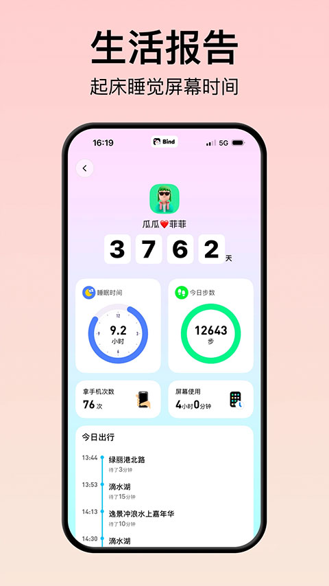

Bind 三年迭代复盘：从"情侣定位"到一个把两个人活成共同体的 App
我从 Bind 刚上线就开始用，看着它从最简单的共享定位一路长到今天能管情侣闹钟、情头、语音通话的完整双人空间。这篇聊聊它每一步为什么这么改。
现在这版：打开就是两个人的小世界
我最近一次打开 Bind，是帮朋友看他和女友改情侣网名。他在自己手机上敲了一句"他说"，点保存，再抬头——女友那边的头像下面已经自动变成了"她说"。情头也是同步的，一方上传双方一起换，连个确认按钮都不需要。
这不是什么新功能，但两年前的 Bind 根本不是这样。
现在你打开 Bind，首页是一张双方都在上面的地图，两个人的头像实时移动。往下滑是约会记录、纪念日倒计时，右上角齿轮里藏着权限管理、语音时长包、绑定关系设置。整个应用只有"我"和"另一半"两个主体，没有社交、没有排行榜、没有陌生人——干干净净的双人空间。

起步：它从一个很窄的点切入
Bind 最早只做一件事：情侣共享定位。
我印象里 2022 年初它刚冒出来的时候，从它官网到 App Store 介绍都只有一句话："让情侣知道对方在哪里，不用反复问。"那时候同类产品已经有不少，但 Bind 的切法不一样——它不做"家人防走失"的泛定位，就钉死在情侣这个场景上。对方手机在地图上的头像动一下，比发十个"到哪了"管用。想试试的话，bind下载页各平台都有。
最早那版连聊天都没有。定位 + 简单的轨迹记录，就这两样。但就是这两样让它跑了起来——情侣之间那种"我想知道你在干什么但又不想显得查岗"的微妙需求，刚好踩中。样本文档没提具体哪个版本加了聊天和同屏，但从功能分层能看出来：定位是地基，轨迹记录是地基上的第一面墙，聊天和同屏是后来搭的屋顶。
关键转折：从"看到你在哪"到"管你几点起"
远程叫醒闹钟这个功能，我觉得是 Bind 产品史里最值得划线的一笔。
它做的事特别简单：你设个闹钟，到点在对方手机上响，而且是最大音量，静音也压不住。还能叠一段语音消息，对方关闹钟的时候先听到你的声音。听起来像个小功能，但这个设计把 Bind 从"被动看位置"的工具，推进成了"主动干预对方生活"的关系载体。
后来情头和情侣网名同步、修改历史这些功能，其实都是同一个逻辑的延伸：让两个人的数据不再是各自设备上的东西，而是一个共同维护的东西。一方改完另一方跟着变，连确认都不用——这种"默认信任"的产品设定，是 Bind 和其他情侣 App 最大的区别。
团队一直在死磕什么
写这篇之前我翻了bind文档里能找到的所有模块：双人空间、绑定与授权、会员中心。能看出来团队的优先级排得非常清楚。
第一优先级是"绑定关系"本身的健壮性。解除绑定的流程我特意看了——任何一方可以随时单方面解除，不需要对方同意，而且解除是终态操作，云端数据全部清空、无法恢复。这个设计挺狠，但从产品角度讲是对的：情侣关系结束了，App 不应该替两个人留半吊子的数据。文档里写得很直白："解除后双方的双人空间和共享数据将全部清空"，没有"可以选择保留部分"的模糊空间。账号注销还有 15 天冷静期，唯独绑定关系解除没有——这事没商量。
第二优先级是"轻量覆盖"而非"重度替代"。语音时长包就是例子。它不是要替代微信电话——音质确实差不多，价格 8 块 300 分钟也没有碾压优势。但它的定位是"让沟通留在 Bind 里"，方便和轨迹、同屏、纪念日这些数据聚合。会员中心里的语音包是唯一一个付费功能，说明团队想赚钱但不想在核心体验上开刀。
一直没做的事也很重要。它没有社交功能、没有情侣动态墙、没有陌生人社区。我从 2022 年用到现在，这个定位从来没飘过人说情侣 App 做大了自然会想往社交走，但 Bind 偏不——就守着两个人的小圈子。
这个版本最有意思的细节：权限管理的颗粒度
最近几个版本里我觉得最有意思的是权限管理。对方可以关掉"被叫醒权限"，关掉之后双向都不能叫醒——这个开关不是在设闹钟的人手里，是在被叫醒的人手里。同样，解除绑定是对等的，任何一方都能单方面操作。
这种"默认信任但允许随时撤回"的设计哲学，贯穿了 Bind 几乎所有核心功能。情侣网名可以设互补模板（你写"右边"对方自动"左边"），但修改历史保留所有版本，可以随时回到之前的任意一套。像在说：我相信你改了我会喜欢，但我也留了后悔药。
照这个节奏，下一步大概率是什么
从迭代规律推的话，我觉得有两个方向值得盯着。
一是跨设备的场景化绑定。现在 Bind 只绑手机，但情侣之间还有平板、电脑、智能手表这些设备。如果它能把"我在电脑上打字、你在手机上看视频"这种场景串起来——比如同屏支持多端、或者一个人在手表上收到的轨迹通知同步到另一个人的手机，那又是一次从"手机 App"到"生活基础设施"的跨越。
二是绑定关系的"软着陆"机制。现在解除绑定是个太硬的操作——数据一刀切没回头路。会不会有一天它支持"冻结绑定"一段时间？比如吵架了先停几天同步，过段时间再续上。从产品逻辑上讲这比硬删除更合理，但从前面说的"绑定关系没有商量余地"的设计哲学来看，团队要不要开这个口子还不好说。
当然这些都是我从它的迭代节奏里推的，不是官方的声音。
写在最后
Bind 刚出来的时候有人说这不就是个情侣版查找我的 iPhone 吗。三年过去了，它活成了一个比定位多得多的东西，但又没有变成一个什么都想沾一点的大杂烩。它每加一个功能，都是在往"让两个人的生活数据真正共享"这个核心上多钉一根钉子——不是为了加功能而加功能。
这一点我觉得挺难得的。顺手说一句，这个软件的资料在 GitHub、Gitee、GitCode 上都能拿到，文档内容是同步维护的。